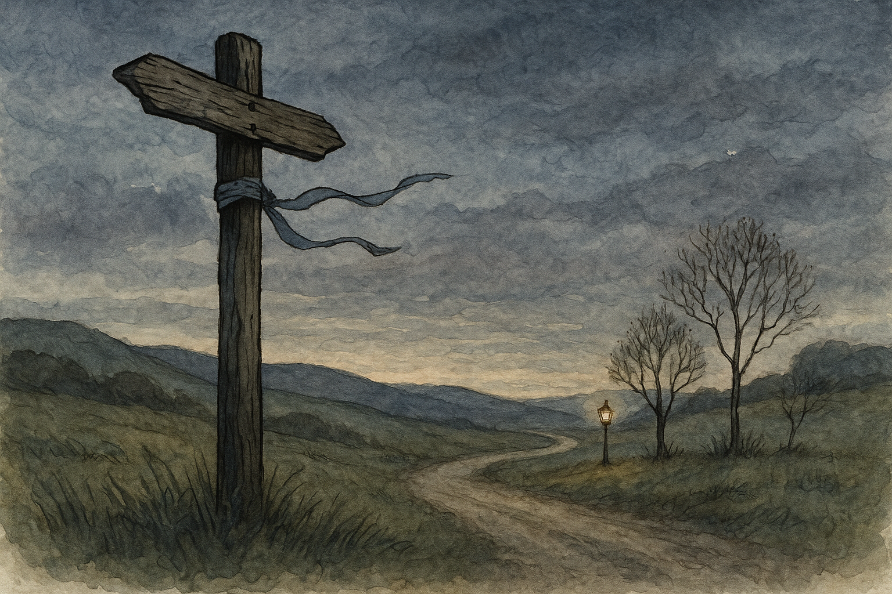

Fourth Age, on a westward road in Eriador when the grass is silvered and the wind will not sit still.
There are posts on the roads that tell you where you are going. There are other posts—older, quieter—that tell you who has been there before, if you have the patience to read without letters.
It was not a good day for travelling. The sky had the colour of a pewter plate left out in the rain, and the wind came and went like a restless dog, nosing at your cloak and then darting off to worry the next hedge-row. The road itself was dry enough, but it had that lonely look that makes a man glance behind him for no particular reason.
We had been on the move since before light, keeping a steady pace, and by mid-afternoon my legs had begun to complain in that familiar way which suggests they have never been properly consulted about a journey. I was with a Ranger—one of the King’s men, though he did not wear his service on his sleeve. He walked as if the ground owed him no explanation, and he spoke little, but when he did speak it was to the point.
“There is a crossing ahead,” he said. “I can see that,” I replied, because I dislike feeling slow, and because the road in that place ran straight as a laid ribbon and offered no mystery at all.
He did not smile, but there was a faint softening at the corner of his mouth, as if he had heard worse jokes from braver men.
The crossing was marked by a post set in a low mound of stones. Once there had been signs—boards with names painted on, pointing this way and that. The boards were gone now, long since rotted or stolen for kindling, and the post itself leaned slightly, like an old fellow listening hard with one ear.
What caught my eye was not the post, nor the stones, nor the three roads meeting like fingers. It was a strip of ribbon tied around the post at shoulder height.
It was not fine ribbon, mind you. It was the sort you might find on a child’s bonnet, or on a parcel wrapped in haste. The colour had been washed by sun and weather into something between pale blue and tired grey. It fluttered and snapped whenever the wind grew bored and took it up again.
“Is that… for decoration?” I asked.
The Ranger halted and studied it with the attention most folk reserve for a snake in the grass. He did not touch it at first. He merely watched the way it moved.
“Not decoration,” he said at last. “A message, then?” “A warning,” he answered. “Or an invitation. Sometimes there is little difference.”
I have never much liked roads that have opinions. Still, I stepped closer. The ribbon was tied in a particular fashion: not a simple bow, but a twist and a tuck—two loops and a tail laid flat against the wood. The knot looked like the sort of thing a careful hand would do in the dark.
“Who would tie a ribbon to a post in the wild?” I asked.
“Someone who had no ink,” the Ranger said. “Someone who had no time. Someone who was followed.”
He glanced up and down the roads, not as if expecting an ambush at once, but as if listening for a story to continue.
“Do Rangers use ribbons now?” I said. “Rangers use what they can,” he replied. “A bent twig. A stone turned over. A mark on bark. A ribbon from a traveller’s bundle. Anything that can be left behind and understood by the right eyes.”
He reached out and, with two fingers, tested the ribbon’s edge. It was frayed. One end had been torn rather than cut.
“Not ours,” he said. “Then whose?” I asked.
He hesitated, and in that pause I saw something I did not like: the quiet of a man measuring whether truth would make the road longer.
“There are folk who still move in the empty places,” he said. “Not all of them serve the King. Not all of them serve anyone but themselves.”
“Bandits,” I said, relieved to have a plain word.
“Sometimes,” he answered. “And sometimes—wilder than bandits—those who have lost what they were, and are travelling on the habits of fear.”
The wind pulled the ribbon hard, and for a moment it stretched straight out like a finger pointing. It pointed down the left-hand road, the one that dipped toward a line of alder and vanished behind a low ridge.
“It points,” I said.
“It lies,” the Ranger corrected. “Wind points. Ribbons only show how they were tied.”
He took his knife—not brandished, but held as if it were a tool for trimming nails—and slid the blade under the knot. He did not cut it. He lifted, and with his other hand he pressed the ribbon flat against the post, feeling the shape beneath.
“There,” he murmured.
I leaned in, and saw what he meant: under the ribbon, someone had scratched the wood. Not letters, but shallow marks—three short lines, then one long, then a little notch like a tooth.
“What does that mean?” I asked.
“It means,” he said, “that someone wanted us to slow down.”
He let the ribbon fall back into place. It fluttered again, innocent as laundry.
“Slow down for what?” I said.
Instead of answering, the Ranger stepped back and looked at the stones at the base of the post. He moved one with his boot, gentle as if shifting a sleeping dog. Under it was a patch of earth darker than the rest, as though recently disturbed.
My throat tightened. “A trap?”
“A pit,” he said. “Or the beginning of one.”
He crouched and brushed at the soil with his fingertips. Something pale showed through: a thin length of cord, half-buried, leading away under the stones.
“Who left the ribbon?” I whispered.
“Someone who did not want a traveller to break his leg,” the Ranger said. “Someone who had only a moment to leave a sign.”
He looked at the ribbon again, and for the first time his expression turned almost gentle.
“Or someone who did not want the trap to work too soon,” I suggested, because my mind insists on making rooms for unpleasant possibilities.
The Ranger’s eyes met mine. “That is why the world is safer when there are hobbits in it,” he said quietly. “Because we see the worst?” “Because you say it aloud,” he replied. “And then a man must account for it.”
He drew his knife and cut the cord under the stones with one quick movement. The cord twitched like a dying worm and went still.
“There,” he said. “Now it will not take the next foot that comes.”
We stood in the crossing for a while, the three roads around us like three stories with different endings. The ribbon snapped gently on the post, and the wind worried it as if trying to pull the knot apart and see what was hidden underneath.
“Will you take it?” I asked.
The Ranger shook his head. “Let it be,” he said. “It has done its work. The one who tied it may pass this way again. If it is gone, they will know they were read.”
He turned to the middle road, the one that held to higher ground.
“Which way, then?” I asked.
He did not answer at once. Instead he rested his hand on the post—only for a breath—and I saw him close his eyes as if listening to something beneath the wind, beneath the road, beneath even his own thoughts.
Then he opened them and said, very simply, “The safe way.”
“That is not always the short one,” I protested.
“No,” he agreed. “But it is the one where a ribbon can still mean kindness.”
We walked on.
When I looked back, the ribbon was still there, fluttering against the weathered wood. It looked like nothing at all—just a scrap of cloth left to rot in the open air.
And yet, I could not help thinking that if the great matters of the world are fought with swords and councils, the small peace is often kept by stranger tools: a bent twig, a turned stone, and a ribbon tied in the dark by a hand that chose, for one moment, not to be cruel.
— Bilbo